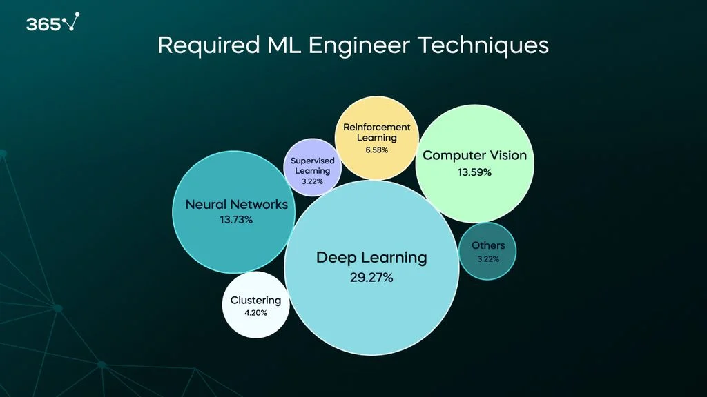

Hi, my name is Noah Sherman, and I am excited to share my personal statement with you. I hope that I can provide a glimpse into my academic journey, personal aspirations, and driving factors. With a consistent curiosity for a diverse range of subjects, I've continually challenged myself to expand my knowledge. My focus in Information and Computer Science has provided me with significant opportunities for both personal and professional growth.
I thrive on the freedom to approach projects creatively. While guidelines offer structure, I find fulfillment in expressing myself through my work. Reflecting on my coursework and projects, I realize the blend of skills I bring to the table. I'm both a writer and a programmer. I enjoy crafting engaging narratives and stories, but I also leverage my programming skills to create visually captivating platforms. By merging storytelling with programming, I aim to create impactful experiences that leave a lasting impression.
In the short term, my goal is to identify my niche within the tech industry. Whether it be data analysis, IT, app development, or web development, I aim to pinpoint the area where my skills and aptitude shine the brightest. Through exploration of personal projects and hands-on professional experience, I seek to gain clarity on my strengths and interests. In the interim, I aspire to secure a stable position in my chosen field. This role will serve as a platform for me to further develop my skills and knowledge of the industry. I am committed to seeking out opportunities for growth and learning, utilizing each experience to propel me closer to my long-term objectives. Looking ahead to the long term, I envision transitioning into a position in management or human resources (HR). I believe my natural strengths in leadership and interpersonal communication make me well-suited for such roles. Alternatively, I am drawn to the idea of remote work, which offers greater flexibility and autonomy. My long-term goal is to find a fulfilling career path that aligns with my values and allows me to make a meaningful impact.
Looking ahead to my future career, I see myself in a role that leverages my technical expertise while also allowing me to make a broader impact within an organization. One path that resonates with my personality is transitioning into a position in management. With my natural strengths in leadership and communication, I see myself leading teams and projects, driving innovation, and fostering a collaborative work environment. I am also drawn to human resources (HR) for similar reasons. It is somewhere I can apply my skills to support the growth and development of employees within an organization. From recruitment and onboarding to performance management and employee engagement, I am passionate about creating an inclusive and supportive workplace culture where individuals can thrive and contribute their best work. My final choice would be an opportunity in remote work. The idea of working independently or as part of a virtual team appeals to me. It provides greater flexibility and autonomy in managing my time and tasks. Remote work also aligns with my desire for continuous learning and personal growth, as it often requires much adaptability and self-discipline to succeed in that environment.
My degree program in Information and Computer Science serves as the cornerstone of my journey towards achieving my career goals. Through a comprehensive curriculum that combines theoretical knowledge with practical application, I am acquiring the skills and expertise necessary to excel in the tech industry and beyond. Specifically, my coursework in programming languages, data analysis, and web development equips me with the technical proficiency needed to thrive in various roles within the technology sector. By mastering these foundational concepts, I am preparing myself to tackle real-world challenges and contribute innovative solutions to complex problems. Moreover, my degree program emphasizes critical thinking, problem-solving, and collaboration, all of which are essential skills for success in today's dynamic work environment. Through group projects, internships, and experiential learning opportunities, I am honing my ability to work effectively in teams, communicate complex ideas, and adapt to evolving industry trends. Furthermore, my degree program offers specialized tracks and elective courses that allow me to tailor my education to align with my career interests. Whether it's delving deeper into machine learning and artificial intelligence or exploring the intersection of technology and business, I have the flexibility to pursue areas of study that complement my long-term career objectives. In essence, my degree program not only provides me with the technical knowledge and skills needed to thrive in the tech industry but also fosters a mindset of continuous learning and adaptation. By leveraging the resources and opportunities available to me within my academic institution, I am confident in my ability to achieve my future career aspirations and make a meaningful impact in my chosen field.
Source: 365 Data Science.
Machine learning engineers play a crucial role in developing various widespread technologies, such as natural language processing, computer vision, speech recognition, fraud detection, and recommendation systems. Recent developments in AI have led to a surge in demand for machine learning specialists, making the job outlook brighter than ever.
I am still in the process of developing the necessary skills for such a position, but I believe my strong interest in AI along with my desire to develop my own tools will motivate me to reach it.
As I look ahead to the future, I recognize that the field of AI and machine learning is rapidly evolving, presenting both challenges and opportunities for professionals like myself. Here are some factors to consider:
Challenges:
Opportunities:
In conclusion, this personal statement has taught me valuable lessons. I've discovered my passion for AI and machine learning and learned the importance of continuous learning and resilience. I'm now more prepared to pursue my dreams with determination and embrace both opportunities and challenges.